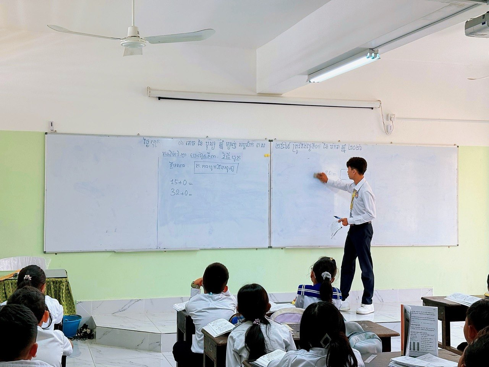

● ActivePrimary School Teaching Practicum Experience
Delivering practical, engaging lessons to young learners at Capital Practice Primary School (សាលាបឋមសិក្សាអនុវត្តរាជធានី). Focusing on foundational mathematics and creating an enjoyable classroom environment.
Outcome: Successfully applying modern teaching methodologies to help young students grasp basic concepts while building their confidence from an early age.